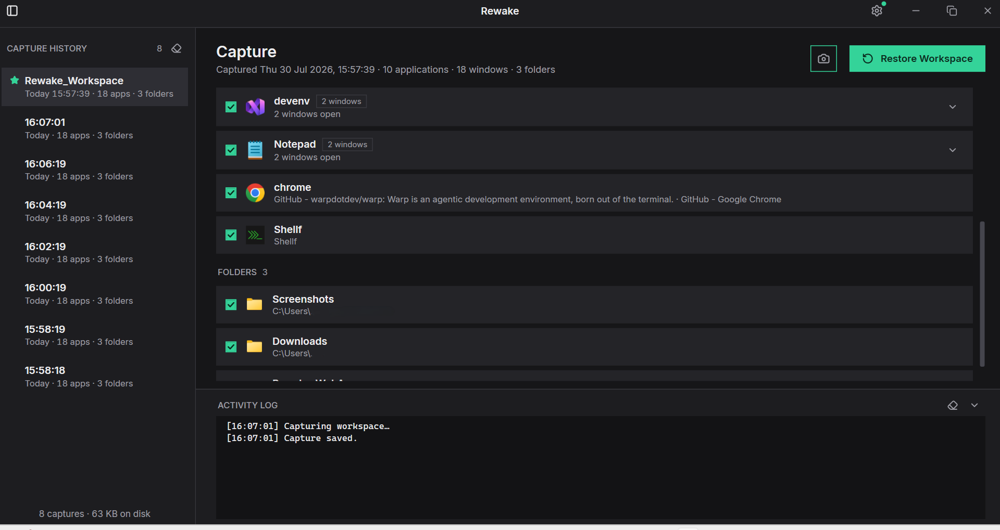
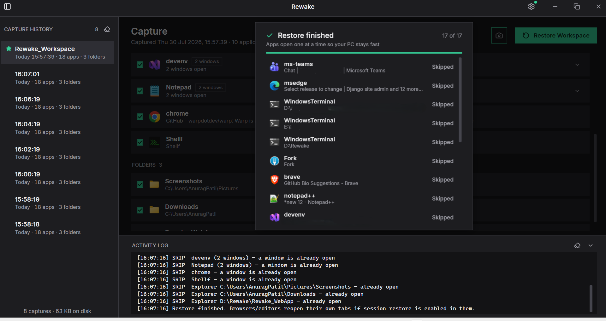
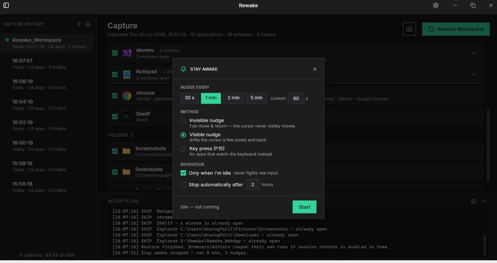

[15:57:39] Capture saved — 18 apps, 3 folders.
Your workspace, back the way you left it.
A power cut shouldn't cost you an hour of reopening everything. Rewake snapshots your open apps, terminals, and folders every 2 minutes — and brings them all back with one click, each window in its place, each terminal in the folder you were working in.

[15:58:18] Ready. Closing the window keeps Rewake running in the system tray.
A 2-minute safety net that runs itself
No setup, no accounts. Start it once, and from then on your desktop is never more than two minutes from recoverable.
It watches quietly
Every 2 minutes Rewake records each visible window — the app, its command line, its position — plus every Explorer folder and each terminal's working directory, read straight from process memory.
You choose what returns
After a reboot or power cut, open any capture — including the pinned pre-shutdown session — and tick exactly the apps, windows, and folders you want back. Star the captures worth keeping forever.
One click, everything back
Apps relaunch one at a time so your PC doesn't choke, each window moves to its saved position, and a live progress card reports every item. Terminals reopen tab-by-tab in their exact folders.

[15:58:47] Restore finished. Browsers/editors reopen their own tabs.
Built for how you actually work
Every feature earned its place by solving a real Monday-morning problem.
Auto-capture, every 2 minutes
Silent snapshots of every visible window from the system tray. The last 30 are kept; favourites are kept forever.
Terminals remember their folder
Windows Terminal, PowerShell, cmd, WSL — every tab reopens in the directory it was in, read from each shell's process memory.
Windows return to their spots
Position, size, monitor, maximized state — all restored. If a monitor is missing, the window lands on the nearest screen.
Name and star captures
Right-click any capture to rename it ("Rewak_Workspace") or favourite it — starred captures sort to the top and survive pruning and Clear History.
Power-cut proof
After an outage, the pre-shutdown session is pinned at the top of the history — everything you had open, one restore away.
Stay Awake, built in
A keep-awake keeper that nudges the mouse on your schedule so the PC never sleeps mid-task. See how it works ↓
[15:59:04] Stay awake stopped — ran 1 h 16 min, 5 nudges.
Your PC stays awake.
Your status stays green.
Long build? Big download? Presenting from another device? Stay Awake simulates a sliver of activity on an interval, so sleep, screen lock, and "Away" never interrupt.
- Three methods — a visible cursor drift, an invisible 1-pixel nudge, or an F15 key tap for apps that watch the keyboard.
- Never fights you — "Only when I'm idle" skips the nudge whenever you've actually touched the machine.
- Survives the window closing — it runs from the tray; a green dot on the gear shows it's on, and auto-stop puts a ceiling on a forgotten Friday session.

[15:59:20] 0 network connections. As always.
Everything stays on your machine
Rewake makes no network connections —
no telemetry, no accounts, no cloud. Your captures are plain JSON in
%LOCALAPPDATA%\Rewake,
readable by you, deletable by you.
The code is open — read it, build it yourself, or take the repo apart on GitHub.
| FILE | CONTENTS |
|---|---|
| snapshots\ | the last 30 captures |
| last-session.json | the pinned pre-reboot capture |
| capture-meta.json | names and favourite stars |
| app-settings.json | your preferences |
| crash.log | written only if something goes wrong |
[now] Ready when you are.
Get the beta
Download the zip, extract it, run
Rewake-Setup — the installer adds the
Start Menu entry, optional run-at-startup, and a clean uninstall. No admin rights needed.
Prefer a portable exe? It's on
GitHub Releases.
REQUIRES WINDOWS 11 (64-BIT) · ~66 MB ZIP · NO RUNTIME NEEDED
SmartScreen will warn you the first time — the beta isn't code-signed yet. Click More info → Run anyway. Some antivirus tools may also ask: Rewake reads window titles and command lines to do its job, which can look unusual to an AV.